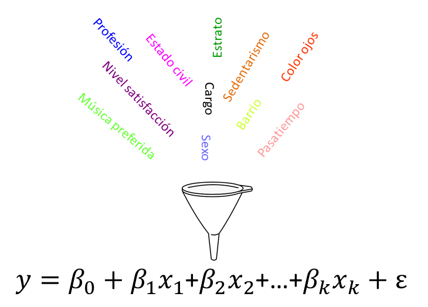
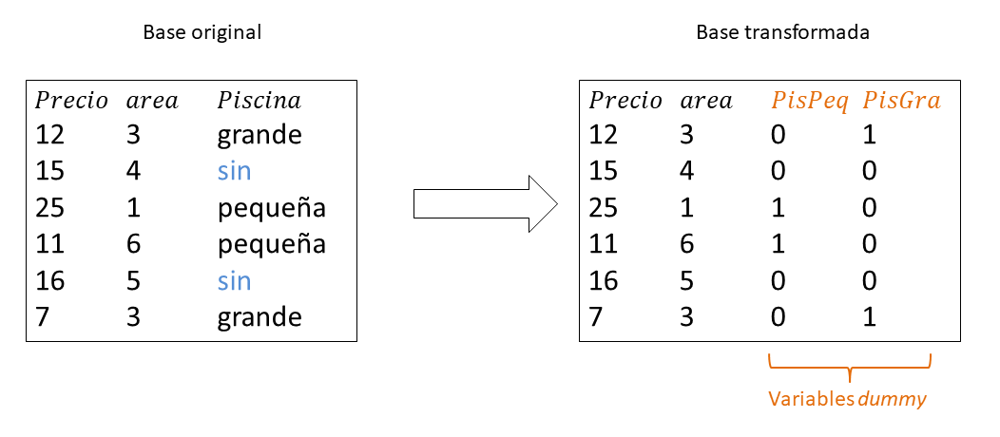
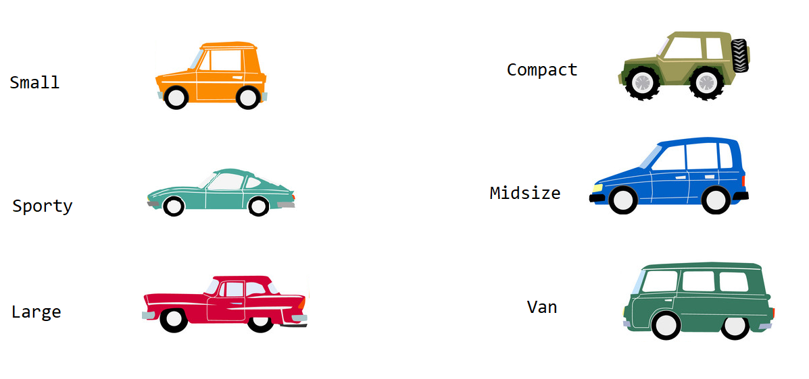
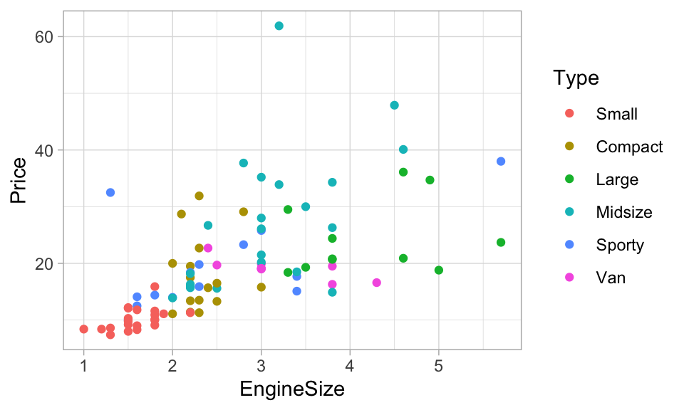
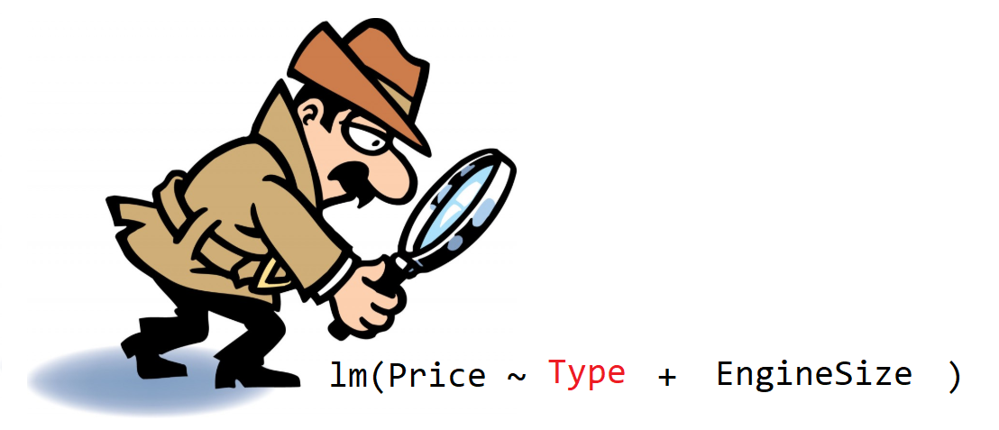

7 Modelos con variables cualitativas
En este capítulo se muestra cómo incluir variables cualitativas en un modelo de regresión con R.
¿Es posible incluir variables cualitativas?
Una de las preguntas frecuentes entre los que inician el estudio de los modelos de regresión es: ¿se pueden incluir variables cualitativas en un modelo de regresión?
La respuesta es SI, definitivamente si.
A continuación una figura que ilustra algunas de las variables que se pueden incluir en la construcción de un modelo de regresión.
Variable indicadora, dummy, ficticia o binaria
La palabra indicadora, dummy, ficticia o binaria es la denominación genérica para una variable que toma valores de 0 o de 1 y que se utiliza para re-expresar variables cualitativas.
Observe la figura @ref(fig:cuali02). En la parte izquierda se tiene una base original de ejemplo con las variables precio, área y piscina, asociadas a seis apartamentos. La variable cualitativa Piscina de niveles sin, pequeña y grande, el nivel sin es el nivel de referencia natural.
Al lado derecho de la figura @ref(fig:cuali02) está la base transformada y vemos que hay 4 variables. Las nuevas variables PisPeq y PisGra son 2 variables indicadoras que logran resumir la información de la variable Piscina que tiene 3 variables.
Para comprender como las 2 variables indicadoras pueden resumir la información de la variable Piscina, vamos a considerar los siguientes tres casos:
- Si
PisPeq = 0yPisGra = 0, entonces el apartamento está SIN piscina. - Si
PisPeq = 1yPisGra = 0, entonces el apartamento tiene piscina PEQUEÑA. - Si
PisPeq = 0yPisGra = 1, entonces el apartamento tiene piscina GRANDE.

Como regla general, si una variable cualitativa tiene \(k\) niveles, se necesitarán de \(k-1\) variables indicadoras para resumir la variable cualitativa.
Creando variables indicadoras
Crear manualmente variables indicadoras para re-expresar variables cualitativas es una tarea muy sencilla, manualmente la podemos hacer. Sin embargo, R posee una herramienta que nos permite convertir la base de datos original en una base de datos transformada (con variables indicadoras). Para este fin se usa la función model.matrix.
Ejemplo
Retomando la base de datos original mostrada en la figura @ref(fig:cuali02) vamos a crear la matriz de diseño \(\boldsymbol{X}\) para ajustar el modelo siguiente:
\[\begin{align} Precio_i &\sim N(\mu_i, \sigma^2), \\ \mu_i &= \beta_0 + \beta_1 Area_i + \beta_2 PisciPequena_i + \beta_3 PisiGrande_i, \\ \sigma^2 &= \text{constante} \end{align}\]
Lo primero a realizar es ingresar los datos para el ejemplo mostrado en la figura @ref(fig:cuali02). El código necesario se muestra a continuación.
Precio <- c(12, 15, 25, 11, 16, 7)
Area <- c(3, 4, 1, 6, 5, 3)
Pisci <- factor(x=c('Grande', 'Sin', 'Pequena', 'Pequena', 'Sin', 'Grande'),
levels=c('Sin','Pequena','Grande'))Al crear el vector Pisci se usó el argumento levels dentro de la función factor para indicarle a R que el nivel de referencia es Sin, seguido de Pequena y luego Grande.
Para obtener la matriz \(\boldsymbol{X}\) con las variables indicadoras (no con la variable original Pisci) se hace lo siguiente:
model.matrix(Precio ~ Area + Pisci) (Intercept) Area PisciPequena PisciGrande
1 1 3 0 1
2 1 4 0 0
3 1 1 1 0
4 1 6 1 0
5 1 5 0 0
6 1 3 0 1
attr(,"assign")
[1] 0 1 2 2
attr(,"contrasts")
attr(,"contrasts")$Pisci
[1] "contr.treatment"Modelos con variables cualitativas
Para ajustar un modelo de regresión lineal con variables cualitativas se procede de la forma usual como se ajustan modelos con lm, no es necesario crear de antemano la matriz \(\boldsymbol{X}\), esto porque lm internamente crea la matriz de diseño \(\boldsymbol{X}\).
Ejemplo
En este ejemplo vamos a utilizar la base de datos Cars93 del paquete MASS. El objetivo es ajustar el siguiente modelo para explicar el precio del auto en función del tamaño del motor y del tipo de auto, es decir, el objetivo es ajustar el siguiente modelo.
\[\begin{align} Precio_i &\sim N(\mu_i, \sigma^2), \\ \mu_i &= \beta_0 + \beta_1 EngSize_i + \beta_2 TypeC_i + \beta_3 TypeS_i + \beta_4 TypeM_i + \beta_5 TypeL_i + \beta_6 TypeV_i, \\ \sigma^2 &= \text{constante} \end{align}\]

Solución
Lo primero a realizar es cargar el paquete y explorar las variables de interés con la ayuda de la función str.
require(MASS)
str(Cars93[, c('Price', 'EngineSize', 'Type')])'data.frame': 93 obs. of 3 variables:
$ Price : num 15.9 33.9 29.1 37.7 30 15.7 20.8 23.7 26.3 34.7 ...
$ EngineSize: num 1.8 3.2 2.8 2.8 3.5 2.2 3.8 5.7 3.8 4.9 ...
$ Type : Factor w/ 6 levels "Compact","Large",..: 4 3 1 3 3 3 2 2 3 2 ...La variable Type tiene 6 niveles, para ver todos niveles usamos el siguiente código.
levels(Cars93$Type)[1] "Compact" "Large" "Midsize" "Small" "Sporty" "Van" De la salida anterior se observan que los niveles son Compact, Large, Midsize, Small, Sporty y Van. Al observar cuidadosamente los niveles vemos que ellos están ordenados por orden lexicográfico, primero Compact por iniciar con la letra C, por último Van por iniciar con la letra V. Al mirar el modelo requerido se nota que el nivel Small no aparece en la ecuación de \(\mu\), esto significa que ese es el nivel de referencia que se encuentra en el intercepto \(\beta_0\). Para redefinir los niveles en el orden requerido usamos el siguiente código.
Cars93$Type <- relevel(Cars93$Type, ref = 'Small')
levels(Cars93$Type) # Para verificar el cambio[1] "Small" "Compact" "Large" "Midsize" "Sporty" "Van" A continuación vamos a crear un diagrama de dispersión para ver la relación entre las variables del problema.
library(ggplot2)
ggplot(Cars93, aes(x=EngineSize, y=Price, color=Type)) +
geom_point() + theme_light()
Ahora si podemos ajustar el modelo solicitado usando el siguiente código.
mod <- lm(Price ~ EngineSize + Type, data=Cars93)
summary(mod)Coefficients:
Estimate Std. Error t value Pr(>|t|)
(Intercept) 2.794 2.348 1.190 0.23732
EngineSize 4.621 1.110 4.164 7.4e-05 ***
TypeCompact 4.644 2.484 1.870 0.06489 .
TypeLarge 2.053 3.916 0.524 0.60138
TypeMidsize 10.286 2.700 3.810 0.00026 ***
TypeSporty 5.078 2.634 1.928 0.05721 .
TypeVan 1.517 3.332 0.455 0.65006
---
Signif. codes: 0 ‘***’ 0.001 ‘**’ 0.01 ‘*’ 0.05 ‘.’ 0.1 ‘ ’ 1Usando la información de la salida anterior se puede construir el siguiente modelo ajustado.
\[\begin{align} \widehat{Precio}_i &\sim N(\hat{\mu}_i, \hat{\sigma}^2), \\ \hat{\mu}_i &= 2.794 + 4.621 EngSize_i + 4.644 TypeC_i + 5.078 TypeS_i + 10.286 TypeM_i + \ldots \\ \hat{\sigma} &= 7.068 \end{align}\]
¿Cómo se interpretan los coeficientes?
- Para cada tipo de auto, si el tamaño del motor se pudiera aumentar en 1 litro, se espera que el precio promedio aumente en 4.621 miles de dólares.
- Si tenemos dos autos, uno small y otro compacto, ambos con el mismo tamaño del motor, se espera que el precio promedio del compacto sea 4.644 miles de dólares mayor con respecto al auto small.
- Si comparamos un auto small y uno midsize, ambos con el mismo tamaño del motor, es de esperarse que el precio promedio del auto midsize sea 10.286 miles de dólares más que el small.
- Dos autos con el mismo tamaño del motos, uno de tipo sporty y otro de tipo large, se espera que el de tipo sporty tenga un precio promedio de 3.025 miles de dólares más que el large (valor obtenido de 5.078-2.053).
Warning
Cuidado, no intente interpretar \(\hat{\beta}_0\) en este ejemplo. ¿Por qué?
Significancia de variables cualitativas
Una pregunta frecuente entre los usuarios es ¿cómo saber si una variable cualitativa es significativa para un modelo?
Cuando se incluye una variable cualitativa de \(k\) niveles en un modelo de regresión, aparecen \(k-1\) variables indicadoras y por lo tanto \(k-1\) valores-P en la tabla resumen. Usar esos valores-P nos puede llevar a conclusiones erróneas.

Para saber si una variable cualitativa es significativa para un modelo hay dos formas:
- Crear una anova y ver si la variable cualitativa es significativa en el modelo es decir, usando
anova(mod). - Crear dos modelos, uno reducido sin la variable cualitativa y otro completo con la variable cualitativa, luego usar un análisis de varianza,
anova(mod.redu, mod).
Ejemplo
En este ejemplo vamos a retomar los datos del ejemplo anterior en el cual se usa la base de datos Cars93 del paquete MASS. El objetivo es ajustar un modelo para explicar el precio del auto en función del tamaño del motor y del tipo de auto.
Supongamos el tamaño del motor está presente en el modelo, ¿será la variable tipo de auto significativa para el modelo?
Solución
Forma 1
En la forma 1 debemos ajustar el modelo y usar la función anova para ver si la variable cualitativa es significativa en el modelo.
Al usar la función anova sobre un modelo mod obtenido con la función lm, aparecerán tantas filas (con valor-P) como número de variables tenga el modelo ajustado. El conjunto de hipótesis para cada una de las filas es:
\[\begin{align} H_0 &: \text{la variable de la FILA no aporta información para el modelo}, \\ H_A &: \text{la variable de la FILA si aporta información para el modelo} \end{align}\]
A continuación el código para usar la forma 1.
require(MASS)
data("Cars93")
mod <- lm(Price ~ EngineSize + Type, data=Cars93)
anova(mod)Analysis of Variance Table
Response: Price
Df Sum Sq Mean Sq F value Pr(>F)
EngineSize 1 3063.8 3063.78 61.3270 1.16e-11 ***
Type 5 1223.8 244.77 4.8994 0.000542 ***
Residuals 86 4296.4 49.96
---
Signif. codes: 0 '***' 0.001 '**' 0.01 '*' 0.05 '.' 0.1 ' ' 1De la salida anterior se observa que el valor-P asociado a Type es de 0.000542, usando un nivel de significancia usual del 5% se concluye que hay evidencias para rechazar \(H_0\), es decir, la variable Type si aporta información al modelo.
Forma 2
En la forma 2 debemos crear dos modelos, uno reducido sin la variable cualitativa y otro completo con la variable cualitativa, luego usar un análisis de varianza, anova(mod_redu, mod_comp).
Al usar la función anova el conjunto de hipótesis es:
\[\begin{align} H_0 &: \text{la variable Type no aporta información para el modelo}, \\ H_A &: \text{la variable Type si aporta información para el modelo} \end{align}\]
A continuación el código para usar la forma 2. El modelo mod_redu contiene un modelo sin la variable cualitativa de interés Type, mientras que el modelo mod_comp si la contiene.
require(MASS)
data("Cars93")
mod_redu <- lm(Price ~ EngineSize, data=Cars93)
mod_comp <- lm(Price ~ EngineSize + Type, data=Cars93)
anova(mod_redu, mod_comp)Analysis of Variance Table
Model 1: Price ~ EngineSize
Model 2: Price ~ EngineSize + Type
Res.Df RSS Df Sum of Sq F Pr(>F)
1 91 5520.2
2 86 4296.4 5 1223.8 4.8994 0.000542 ***
---
Signif. codes: 0 '***' 0.001 '**' 0.01 '*' 0.05 '.' 0.1 ' ' 1De la salida anterior se tiene un valor-P de 0.000542, usando un nivel de significancia usual del 5% se concluye que hay evidencias para rechazar \(H_0\), es decir, la variable Type si aporta información para el modelo y por lo tanto es una variable útil.
La decisión final con las formas 1 y 3 siempre coinciden.
Warning
Algunas veces una variable cualitativa puede ser importante en el modelo pero los valores-P asociados a sus variables indicadoras (auxiliares) son todos mayores al valor \(\alpha\), el resultado del summary puede ser engañoso. A seguir un ejemplo claro de esta situación.
Ejemplo
El ejemplo aquí mostrado está basado en una pregunta de StackOverFlow.
El ejemplo consiste en simular un conjunto de 30 valores de \(y \sim N(\mu, 1)\), donde las observaciones 1 a 10 tienen \(\mu=0\), las observaciones 11 a 20 tienen \(\mu=-0.5\) y las restantes diez tienen \(\mu=0.5\). Para diferenciar las observaciones se tendrá la variable de agruación cualitativa g que contendrá las letras A, B y C diez veces cada una. El código para simular los datos se muestra a continuación.
set.seed(8867) # this makes the example exactly reproducible
y <- c(rnorm(10, mean=0, sd=1),
rnorm(10, mean=-0.5, sd=1),
rnorm(10, mean=0.5, sd=1))
g <- rep(c("A", "B", "C"), each=10)¿Será la variable cualitativa g significativa en un modelo de regresión?
Solución
Vamos a ajustar el modelo con fórmula y ~ g para estudiar el efecto de la agrupación g en la media de la variable respuesta y.
model <- lm(y ~ g)Obviamente esperamos concluir que la media de la variable y dependa de la variable de agrupación g. Para esto vamos a explorar el resultado con la función summary.
summary(model)
Call:
lm(formula = y ~ g)
Residuals:
Min 1Q Median 3Q Max
-2.59080 -0.54685 0.04124 0.79890 2.56064
Coefficients:
Estimate Std. Error t value Pr(>|t|)
(Intercept) -0.4440 0.3855 -1.152 0.260
gB -0.9016 0.5452 -1.654 0.110
gC 0.6729 0.5452 1.234 0.228
Residual standard error: 1.219 on 27 degrees of freedom
Multiple R-squared: 0.2372, Adjusted R-squared: 0.1807
F-statistic: 4.199 on 2 and 27 DF, p-value: 0.02583De la salida anterior vemos que los efectos gB y gC tienen valores-P altos, superiores al usual 5%, y por lo tanto estaríamos tentados a decir que la variable g no tiene efecto sobre la media de y. El lector podría encontrar esto un poco desconcertante.
Vamos a realizar el análisis pero ahora con la función anova.
anova(model)Analysis of Variance Table
Response: y
Df Sum Sq Mean Sq F value Pr(>F)
g 2 12.484 6.2418 4.199 0.02583 *
Residuals 27 40.135 1.4865
---
Signif. codes: 0 '***' 0.001 '**' 0.01 '*' 0.05 '.' 0.1 ' ' 1En la fila donde aparece la variable g tenemos el resultado de la prueba de hipótesis
\[H_0: \text{la variable g no influye en la media de y},\] \[H_A: \text{la variable g si influye en la media de y}\]
El valor-P de esta prueba es de 0.02583, esto indica que hay evidencias para rechazar \(H_0\), es decir, encontramos que la variable g si influye sobre la media de la variable y.
Cuando se quiera explorar el efecto de una variable cualitativa en un modelo es mejor usar la función
anova que los resultados del summary.